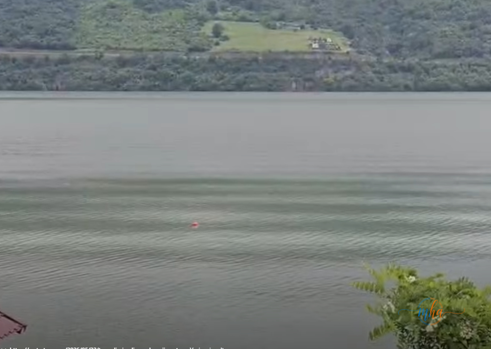

🚨 SITUAȚIE — Clisura Dunării, zona Dubova
- Victimă: băiat de 18 ani, din Brașov
- Context: excursie școlară în Mehedinți
- Cauza probabilă: cădere accidentală de pe pontonul pensiunii
- Trupul: localizat cu drona, recuperat de pompieri
- Anchetă: în curs, ipoteză principală — accident
O tragedie a zguduit Clisura Dunării în această dimineață. Un tânăr de 18 ani, turist sosit în județul Mehedinți alături de colegi și cadre didactice, a fost găsit fără viață în apele fluviului, în zona comunei Dubova.
Potrivit primelor informații, adolescentul era elev din Brașov și se afla la o pensiune din zonă, cazat împreună cu grupul de excursioniști. În cursul dimineții, băiatul a ieșit singur pentru a vedea răsăritul soarelui. La scurt timp, colegii săi au observat că a dispărut și au alertat imediat autoritățile.
Căzut accidental de pe pontonul pensiunii
Din datele preliminare culese de autorități, tânărul ar fi căzut accidental de pe pontonul pensiunii direct în Dunăre. O circumstanță dramatică suplimentară: surse apropiate anchetei au declarat că adolescentul suferea de diabet, iar una dintre ipotezele luate în calcul este că i s-ar fi făcut rău înainte de a cădea în apă.

Foto: MehedintiAzi.ro
Operațiune de căutare contracronometru — drona a localizat trupul
Imediat după primirea alertei, echipaje ISU Mehedinți s-au deplasat de urgență la fața locului. Operațiunea de căutare a fost una contracronometru, desfășurată atât pe apă, cât și prin cercetare aeriană. Trupul adolescentului a fost localizat cu ajutorul unei drone și scos la mal de pompieri. Potrivit informațiilor preliminare, băiatul plutea pe apă în momentul în care a fost găsit.
Autoritățile continuă cercetările pentru a stabili cu exactitate împrejurările tragediei. În acest moment, nu există niciun indiciu că ar fi vorba despre o altă cauză decât un accident nefericit.
Poliția Mehedinți a deschis o anchetă pentru a stabili circumstanțele exacte ale decesului. Principala ipoteză rămâne aceea a unui accident — nu există indicii că ar fi fost vorba despre o petrecere sau un gest intenționat.
Tragedia a îndoliat întregul grup de elevi și cadre didactice veniți din Brașov pentru a descoperi frumusețile Clisurii Dunării, una dintre cele mai spectaculoase zone turistice ale județului Mehedinți.
Sursa: Redactia MehedintiAzi.ro — Vom reveni cu detalii pe măsură ce ancheta avansează.